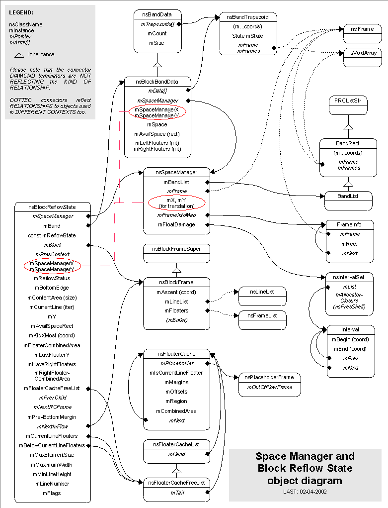

Gecko Layout High Level Design Document
Space Manager High Level Design
Overview
The Space Manager and associated classes and strructures are used by Block
and Line layout to manage rectangular regions that are occupied and available,
for correct handling of floated elements and the elements that flow around
them. When elements are floated to the left or right in a layout, they
take up space and influence where other elements can be placed. The
Space Manager is responsible for keeping track of where space is taken up
and where it is available. This information is used by block layout to correctly
compute where other floated elements should be placed, and how much space
is available to normal in-flow elements that flow around the floated bits.
The Space Manager works in concert with several other classes to do its
job. The classes that are considered part of the Space Manager are:
- nsSpaceManager
- nsBandData
- nsBlockBandData
- BandRect / BandList (private structs)
- FrameInfo (private struct)
- nsBandtrapezoid
Outside of the Space Manager itself, the clients of the Space Manager also
play an inportant part in the management of he available and used space.
The primary classes that interact with the Space Manager are:
- nsBlockReflowState
- nsBlockFrame
- nsBoxToBlockAdaptor
The general interaction model is to create a Space Manager for a block
frame in the context of a Reflow, and to associate it with the BlockReflowState
so it is passed down to child frames' reflow methods. After reflow, the
Space Manager is destroyed. During reflow, the space manager stores
the space taken up by floats (UpdateSpaceManager in nsBlockFrame) and
provides information about the space available for other elements (GetAvailableSpace
in nsBlockReflowState).
Additionally, there is a need to manage impacts to lines caused by
changes to floated elements. This is referred to as Propagation
of Float Damage and is handled by the Block Frame, making use of the
Space Manager. When a float is incrementally reflowed, the Space
Manager is notified if the float's region has changed. If so, the
vertical space that has been affected (including both the float's old
region and the float's new region) is noted in the internal
nsIntervalSet as potential float damage (the method is
IncludeInDamage). During the incremental reflow of dirty lines the
block frame may encounter lines that are NOT dirty. In this case the
Space Manager is also asked if there is any float damage, and
if there is then the block further checks to see if that damage
intersects the area of the non-dirty line, marking it dirty if there
is intersection. Thus, changes to floats on other lines may
cause impact to otherwise clean lines, and the Space Manager
facilitates the detection of this. Data Model
Class/Component Diagram

- nsSpaceManager: The central point of management of the space taken
up by floats in a block
- nsBandData: Provides information about the frames occupying a band
of occupied or available space
- nsBlockBandData: A specialization of nsBandData that is used by
nsBlockReflowState to determine the available space, float impacts, and
where floats are cleared. Essentially a CSS-specific wrapper for
generic nsBandData.
- BandRect: Keeps the bounds of a band, along with the frames associated
with the band. BandRects are a linked list (provided by PRCListStr
super-class) and also provide some geometry-management methods (SplitVertically,
SplitHorizontally) and some methods that query or manipulate the frames associated
with the band (IsOccupiedBy, AddFrame, RemoveFrame).
- BandList: A subclass of BandRect that provides a list interface
- Head(), Tail(), IsEmpty(), etc.
- FrameInfo: A structure that keeps information about the rectangle
associated with a specific frame, in a linked list.
- nsBandTrapezoid: Represents the discrete regions within a band that
are either Available, Occupied by a single frame, or Occupied by several
frames. This is used to communicate information about the space in
the band to the clients of the SpaceManager. There is no internal use
of the nsBandTrapezoid by the Space Manager, rather it uses its internal
BandList to create a BandData collection, which is largely made up of nsTrapezoid
data.
Use Case
Use Case 1: Space Manager is Created / Destroyed
Space Manager instances are created in the nsBlockFrame's Reflow method.
- An instance is created
- The BlockReflowState's previous Space Manager is saved off.
- The new Space Manager instance is associated with the BlockReflowState.
- After the block frame's Reflow has completed, the old Space Manager
instance is re-associated with the BlockReflowState
- The new Space Manager is destroyed.
If the BlockReflowState already had a Space Manager instance associated
with it, it is stored off before being replaced, and the returned to the
BlockReflowState instance after the new one has been destroyed. Thus,
Space Managers are effectively 'nested' during reflow, with each new block
introducing its own Space Manager.
Use Case 2: Float is added to the Space Manager
After a Space Manager is created for a block context's reflow chain, a
floated block may be added to it. This happens in the method nsBlockReflowState::RecoverFloats and
nsBlockReflowState::FlowAndPlaceFloat (formerly this was done in nsBlockFrame::UpdateSpaceManager).
The general algorightm in nsBlockReflowState::RecoverFloats is:
- For each line in the block, see if it has floated blocks
- If floats are in the line, iterate over the floats and add each
one to the Space Manager via the AddRectRegion method. The actual rect
for the frame is cached in an nsFloatCache so it does not have to be recomputed.
- If the block has any block children, then translate the Space Manager
to the child block's origin and update the space manager in the context
for the child block, recursively. When done with the child, restore the Space
Managers coordinates by translating by the negative of the child block's
origin.
The general algorightm in nsBlockReflowState::FlowAndPlaceFloat is:
- The region that the float currently occupies is recorded.
- The band of available space is searched (with nsBlockReflowState::GetAvailableSpace);
- The float frame that is get from the passed nsFloatCache argument is reflowed
and its rect is retrieved with GetRect;
- The floats margins are added;
- Check if the float can be placed in the acutal band: if not advance to the next band;
- Check the float type and if it can be added to the space manager;
- Align the float to its containing block top if rule
CSS2/9.5.1/4
is not respected;
- Add the float using nsSpaceManager::AddRectRegion
- Compare the area that the float used to occupy with the area that it now occupies: if different,
record the vertically affected interval using nsSpaceManager::IncludeInDamage
Use Case 3: Space Manager is used to find available space to reflow
into
The nsBlockFrame makes use of the Space Manager indirectly to get the available
space to reflow a child block or inline frame into. The block frame uses
a helper method on the nsBlockReflowState class to do the actual computation
of available space based on the data in the Space Manager. Here is how it
works for reflowing an inline frame within a block (this also occurs for
reflowing a block frame and, partially, for preparing for a resize reflow).
- nsBlockFrame first frees all float information for the line that
is being reflowed.
- GetAvailableSpace is called on the BlockReflowState
- the BlockReflowState calls GetAvailableSpace on its BlockBandData
instance (which was setup in the BlockReflowState's constructor based on
the SpaceManager passed in and computed content area).
- BlockBandData then gets the band data from the space manager via
a call to the Space Manager associated with the BlockBandData instance.
- The BlockBandData then walks the collection of trapezoids that were
returned by the SpaceManager method GetBandData (as nsBandData wrappers)
and determines the right-most edge of the available space.
- The BlockReflowState then stores this available space rect for use
in the rest of the reflow chain.
Use Case 4: Propagation of Float Damage: detecting and handling float
damage
This process is driven by the Block Frame.
- A non-dirty line is encountered by the Block Frame in ReflowDirtyLines
- Block Frame calls its PropagateFloatDamage method
- The Space Manager is checked to see if there is any float damage
- If there is, then the block frame asks the Space Manager if the
line in question intersects the float damage
- If the line does intersect a damage interval, then the line is marked
dirty
- If the line does not intersect a damage interval, it may still be
marked dirty if:
- it was impacted by floats before, but is not any longer
- it was not impacted by floats befre, but is now
-
it is impacted by floats and is a block
Problems / bugs found during documentation:
- BandRect and BandList are public in nsSpaceManager.h - should be
private (compiles fine)
- nsSpaceManager data members are declared protected, but there are
no subclasses. Should be private (compiles fine)
- nsBlockFrame::Paint is mucking with nsBlockBandData in and #if 0
block - remove that and the include (compiles fine)
- nsSpaceManger has no way of clearing the float damage interval
set - this might be needed if the SpaceManager persists beyond a Reflow